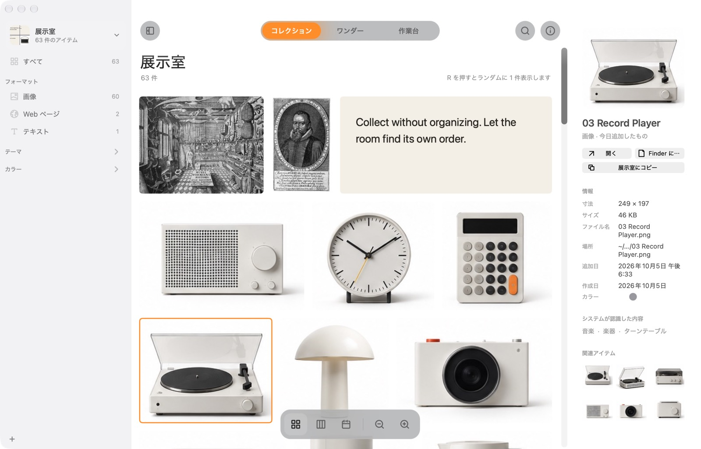
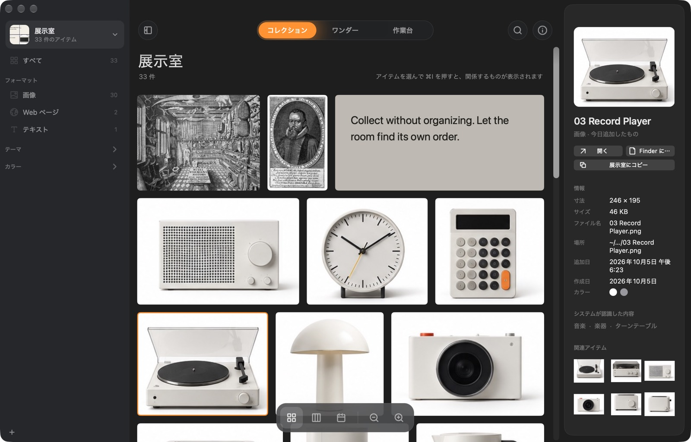
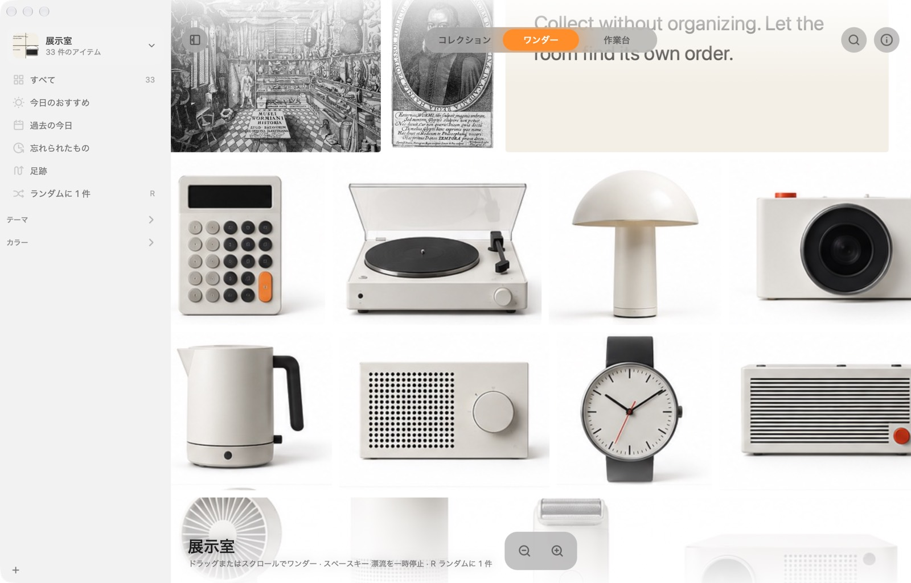
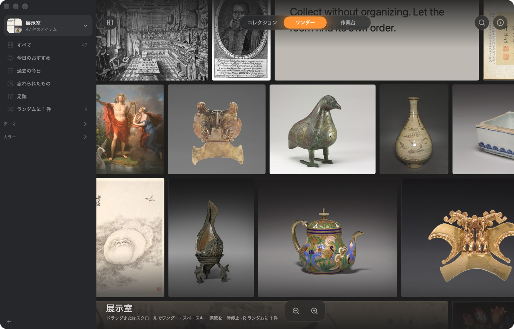
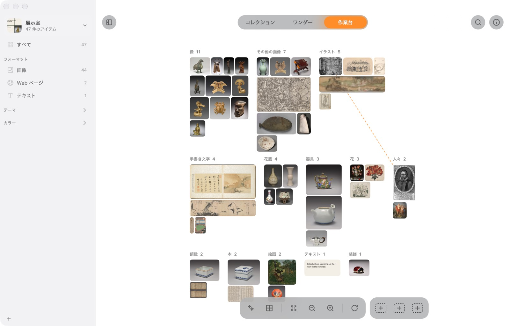
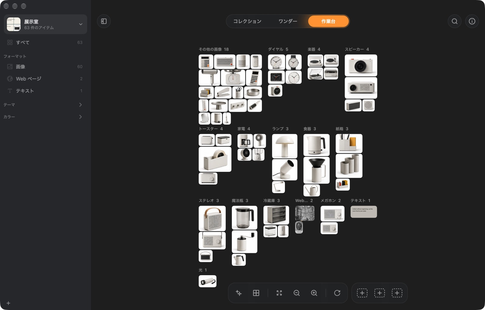

フォルダを見張る
フォルダを 3 つまで指定できます。入れたファイルは自動で展示室へ、フォルダから出せば展示室からも消えます。ファイルは元の場所のまま。
 Wunder.
Wunder.Mac のための驚異の部屋。なんでも集めて、整理はしない。
Mac 版をダウンロード無料 · 4 MB · macOS 14 以降 · 初めて開くときは？
Homebrew でも：
1Wunder とは
画像、リンク、引用、スクリーンショット、ファイル。⌘+Shift+C を押せば入ります。フォルダを選ぶことも、名前を付けることもありません。
Wunder は集めたものを見ています。画像の中の文字、写っているもの、色。だから整理したことがなくても、あとで見つけられます。
2何が違うのか
フォルダは、なぜ取っておいたのか分かる前に、置き場所を決めさせます。だからものは、どこにもないか、あちこちにあることになります。
Wunder は形式、種類、テーマ、色で自分で整理します。昔のものも連れ戻してくれるので、集めたものがしまい込まれたままになりません。
3使い方
ここで試せます：⌘+Shift+C を押すか、上のキーをクリック。
4できること
入れられるもの
Web から、カメラから、ディスクから。画像の中の文字も検索できます。
JPEGPNGHEICWebPGIFTIFFRAWPSDポインタを重ねると、その場で再生します。
MOVMP4M4V再生できる波形として表示します。
MP3M4AWAVAIFFFLACすべてのページの文字を検索できます。
PDFどんなリンクでも。ページ全体のコピーを残すので、サイトが消えても見られます。本、映画、音楽、商品、場所も見分けます。
URLコピーした言葉は、出どころを覚えたカードになります。
TXTRTFHTML範囲かウインドウを選ぶだけで集まります。
Control+⌘+Shift+Cそれぞれのプレビューを残し、元のアプリで開きます。
KeynoteFigmaZIP…展示室
プロジェクト、場面、気分ごとに展示室を分けられます。それぞれにコレクション、カバー、フォルダがあり、指定したフォルダを自動で見張って新しいファイルを取り込むことも、展示室専用のフォルダにファイルを保管することもできます。iCloud で Mac 間の同期も。


 現在
現在


 iCloud
iCloud


 iCloud
iCloudフォルダ
フォルダを 3 つまで指定できます。入れたファイルは自動で展示室へ、フォルダから出せば展示室からも消えます。ファイルは元の場所のまま。
手元に控えを残したいなら、展示室に専用フォルダを作り、集めたものを元の名前でコピーして保管します。
検索
グリッド、メイソンリー、タイムラインで眺められます。サイドバーには形式、種類、テーマ、色が自動で並びます。


ひとりでに漂う壁。「今日のおすすめ」は忘れかけていたものを毎日 12 点選び、その理由も添えます。


形式、種類、テーマ、色で積み分け、動かして、線でつなぐ。戻ってこられる並べ方を 3 つ保存できます。


作業台
同じものを形式、分類、テーマ、色で積み分け。それぞれが行くべき山へ飛んでいき、いつでも戻せます。
心ひかれたものを、取っておこう
| Wunder | Atlas | Eagle | |
|---|---|---|---|
| 価格 | 無料 | US$39 | US$29.95 |
| フォルダやタグを作らなくても自動で整理 | ✓ | – | ルールが必要 |
| 言葉で説明して画像を探す | ✓ | – | ✓ |
| 毎日、昔のものを連れ戻す | ✓ | – | – |
| 自由に並べられるキャンバス | ✓ | ✓ | – |
| すべて Mac の中に保存 | ✓ | ✓ | ✓ |
| Windows 版もある | – | – | ✓ |
各アプリの公式サイトの記載をもとに作成（2026 年 10 月）。
なくしたくないけれど、整理もしたくないものを置いておく Mac の上の場所です。画像、Web ページ、テキスト、ファイルを受け取り、中身を理解して、また見つけられるようにします。
Wunder はまだ Apple の公証を受けていないため、初回は macOS に止められます。「システム設定 → プライバシーとセキュリティ」を開き、下までスクロールして「このまま開く」をクリックしてください。一度だけで済みます。
またはターミナルで：xattr -dr com.apple.quarantine /Applications/Wunder.app
いいえ。画像内の文字の読み取り、写っているものの認識、色、似た画像、質問への回答は、すべて Apple のフレームワークで Mac の上で行われます。Wunder がネットにつながるのは、集めたページの読み込み、説明検索用モデル（約 106 MB、1 回だけ、任意）のダウンロード、新しいバージョンの確認のときだけです。
いいえ。ファイルの場所を覚えていて、移動しても追いかけます。コピーを残したい場合は、展示室ごとに専用フォルダへ保存することもできます。
展示室の同期をオンにすると iCloud Drive に移り、同じ Apple アカウントの Mac ならどれでも開けます。2 台で同時に変更しても、両方の変更が残ります。
macOS 14 Sonoma 以降の Mac。コレクションへの質問には Apple Intelligence（macOS 26）が必要です。
はい。ソースは GitHub にあります。
Mac 版は無料。アカウントも設定もいりません。
Mac 版をダウンロードHomebrew でも：
Wunder をつくった理由
同じような App はたくさん使ってきました。実は安くないものばかり。でも使ってみると使いにくくて、いちばん時間を取られたのは、なんと整理でした！
Wunder もたぶん毎日は開かないでしょう。それでちょうどいいんです。あなたの「珍品」を分類して壁に飾っておくので、思い出して開けば、そこは居心地のいい展示室。気ままに見て回るだけで、整理しなくてもまったく大丈夫！
 @rocavence
@rocavence